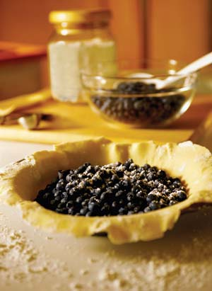

JANIS CHRISTIE/GETTY IMAGES
Fresh blueberries need little or no adornment, but at the height of blueberry season, you’ll have plenty of surplus berries for pancakes, cobblers, pies, muffins and fresh juice. Blueberries are also a breeze to freeze: Simply toss them dry into freezer bags or boxes, and rinse before using.